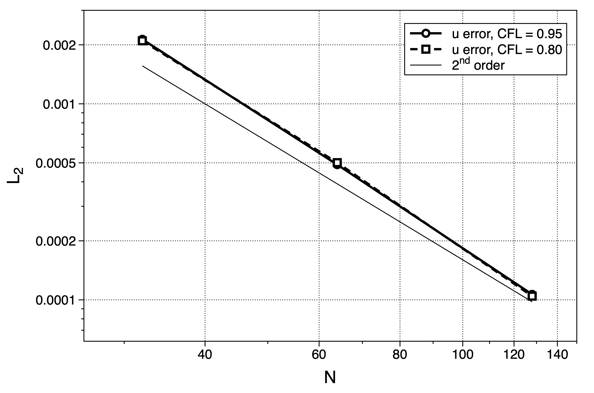
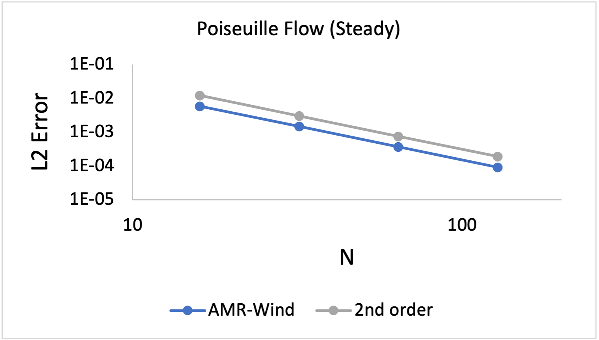
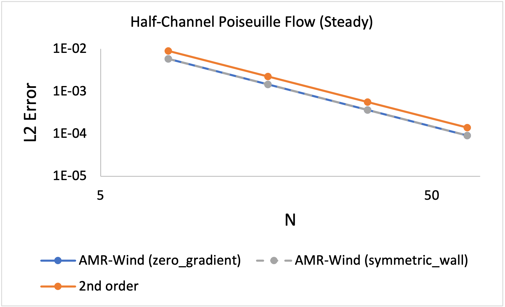
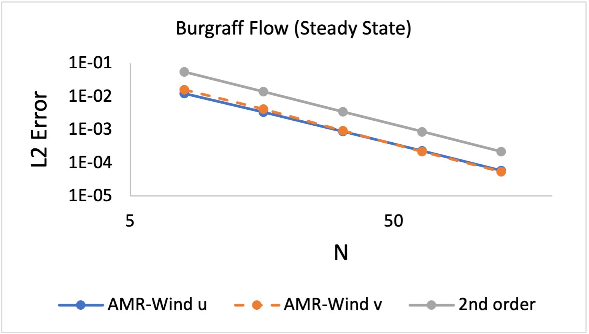
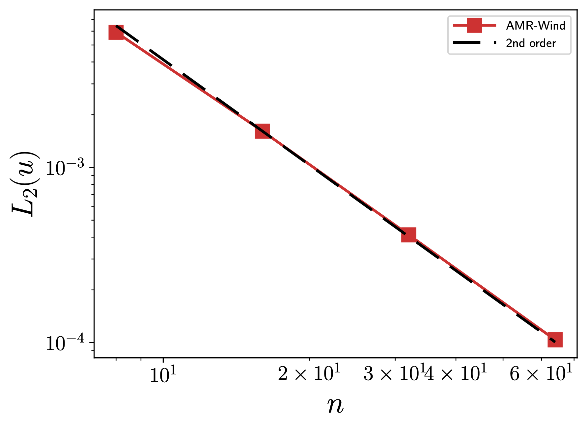

Verification
Verification of AMR-WIND uses MASA and auto-differentiation tools to implement the Method of Manufactured Solutions. MMS verification has been performed for both CPU and GPU architectures.
Building and linking MASA
The user must first build and install MASA. This can be done from source or using Spack.
Building MASA from source
The user must build both Metaphysicl and MASA. After defining
METAPHYSICL_ROOT_DIR and MASA_ROOT_DIR:
$ git clone https://github.com/roystgnr/MetaPhysicL
$ ./bootstrap
$ ./configure --prefix=$METAPHYSICL_ROOT_DIR
$ make
$ make install
$ git clone https://github.com/manufactured-solutions/MASA
$ ./bootstrap
$ ./configure --enable-fortran-interfaces METAPHYSICL_DIR=$METAPHYSICL_ROOT_DIR --prefix=$MASA_ROOT_DIR --enable-python-interfaces
$ make
$ make check
$ make install
Building MASA using Spack
Assuming the user has Spack configured for their system, building and installing MASA is as easy as:
$ spack install masa
Linking MASA to AMR-Wind
The following CMake options enable MASA in AMR-Wind:
-DAMR_WIND_ENABLE_MASA=ON -DMASA_DIR=$MASA_ROOT_DIR
where MASA_ROOT_DIR is the MASA install location.
Performing the MMS verification
For an MMS verification study, one performs a convergence study using an MMS input file, several examples of which can be found in the regression test suite. The velocity errors are computed after each time step and logged to a text file named mms.log. The following results for the Godunov FV method exhibit the expected second order accuracy:
Velocity (u, v, w) \(L_2\) error norms:

The \(L_2\) error norm for a quantity \(s\) is defined as
where \(s^h\) is the numerical solution, \(s^*\) is the exact solution, and \(N_e\) is the number of elements. \(N\), used below, is the number of element on a side of the cube (\(N_e = N^3\)).
Convecting Taylor Vortex (CTV)
An exact solution to the incompressible Navier-Stokes equations is the Convecting Taylor Vortex (CTV) which can also be used to test the order of accuracy. This exact solution is two dimensional, viscous, unsteady and uses periodic boundary conditions. The exact solution is
where \(\omega = \pi^2 \nu\) and \(\nu\) is the viscosity. Simulating the CTV to a fixed time of 0.2 seconds the \(L_2\) error is measured over a set of grids with varying mesh resolution. This is performed for two CFL numbers and shown in the figure:
{kind=link}
Ekman spiral
Solution method adapted from this Ekman lecture. Ekman assumed steady, homogeneous and horizontal flow with friction on a rotating Earth. Hence, the horizontal and time derivatives are zero.
This leave a balance between vertical friction and the Coriolis force:
where \(A_z\) is the eddy viscosity assumed to be constant throughout the boundary layer. If we multiply (2) by \(i\) and add to (1) we get:
where \(i = \sqrt{-1}\), rearranging the left hand side to get \(u+iv\)
Next we define \(V = u+iv\) and substitute that in:
where \(a = \sqrt{\frac{if}{A_z}}\). The solution to this constant coefficient second-order differential equation is:
The boundary conditions for this flow are \(z=0, u=v=0\) and at \(z \rightarrow \infty, u \rightarrow u_g, v \rightarrow 0\) therefore \(A=0\)
where \(B = \hat{B}e^{i\phi}\) and \(\phi\) is the angle of the velocity to the wind. Now separating into real and imaginary parts:
where \(D_E = \sqrt{\frac{2 A_z}{f}}\) is the Ekman depth.
rearranging
using Euler’s identity \(e^{i\theta} = \cos(\theta) + i \sin(\theta)\) we can split this into real and imaginary parts
apply the boundary conditions \(u(0) = 0\),
simplifying further we arrive at the Ekman spiral solution
Velocity profiles of AMR-wind with a Geostrophic wind of 15 m/s
Wind direction \(\tan^{-1}(v/u) \frac{180}{\pi}\)
AMR-wind \(L_2\) error after \(t=200\) seconds.
Channel flow (laminar, quasi-2D) with different BCs
These tests use the Poiseuille flow solution for a channel to verify the implementation of the boundary conditions. Input files for these tests are included among the regression test directories.
AMR-wind \(L_2\) error for whole channel after velocity field has converged to steady state. This evaluates the no-slip boundary conditions at the top and bottom of the domain. Results are identical for different normal directions and flow directions (x, y, and z).
{kind=link}
AMR-wind \(L_2\) error for half-channel after velocity field has converged to steady state. At the upper boundary, the zero-gradient and symmetric wall boundary conditions are employed.
{kind=link}
Burggraf flow: lid-driven cavity with body force
This flow, described by Burggraf (JFM, 1966), is a two-dimensional flow with no-slip walls. The upper wall has a spatially-varying tangential velocity (which is applied to the simulation via a user-defined-function, or UDF, boundary condition), and a spatially-varying body force. At steady state, this flow has an analytical solution that we use to verify the implementation of the UDF BC.
{kind=link}
Channel flow with Smagorinsky LES
This test verifies the implementation of the Smagorinsky LES model as well as the wall model boundary conditions using an analytical channel flow solution.
Smagorinsky model:
This simplifies in a 1-D case to
Mean velocity equations:
Steady state solution (assuming \(\frac{\partial U}{\partial z} > 0\)):
The analytical solution is:
where \(\mathcal{C}_i\) are arbitrary constants.
To solve for \(\mathcal{C}_1\), we set the requirement that \((\nu+\nu_t)\frac{\partial U}{\partial z}\Bigg\vert_{z=0} = -\frac{\partial P}{\partial x}\) using
This gives us a value for \(\mathcal{C}_1\) as
Using this \(\mathcal{C}_1\) and setting \(U(z=0)=0\), we get \(\mathcal{C}_0\) as:
Finally, to make this problem well-posed, instead of setting a slip-wall at the top boundary, we set a Dirichlet boundary condition using \(U(z)\) computed at \(z_{\mathrm{hi}}\).
Parameter values for testing
The hand computed values for the constants and boundary conditions for varying \(n_z\) are:
\(n_z\) |
\(\mathcal{C}_0\) |
\(\mathcal{C}_1\) |
\(U\vert_{z=1}\) |
|---|---|---|---|
8 |
169.90632344067848 |
49.63299783004268 |
0.5322727144609587 |
16 |
2449.4399999999982 |
201.95839999999998 |
0.5576738677495996 |
32 |
38115.76743991355 |
811.5733178848386 |
0.5646234542509774 |
64 |
605551.4603806001 |
3250.1208744082833 |
0.5664029656909406 |
Test results
These are results of running the test case for 100 seconds.
{kind=link}